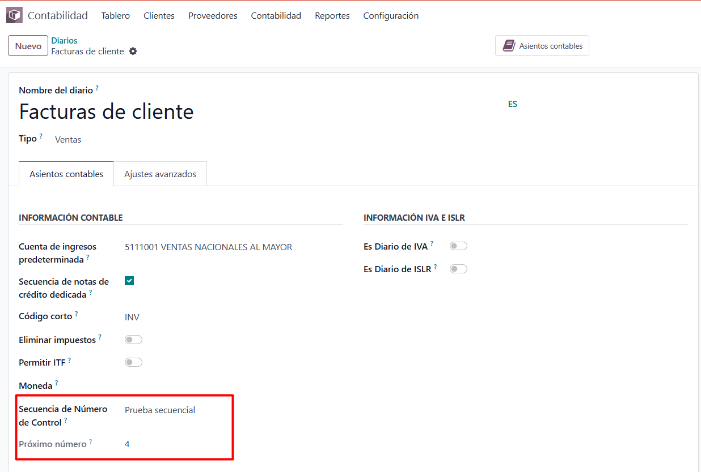

<div class="container">
    <section>
        <h2 style="margin-top: 20px; margin-bottom: 15px;">Control sequence for invoices</h2>
        <p>This module allows you to configure a sequence per ledger to automatically assign the control number on invoices.</p>
        
    </section>
</div>